AI Academy · Level 4 · Grade 9 · Week 6 · Student lesson
Label Quality
Learn to understand, design, build, test and explain AI systems responsibly.
Project: Responsible Plant Classifier
Before you start
AI-2 Week 8: operational label definitions reduce avoidable disagreement.
Plan time to read, investigate and explain. Keep predictions separate from observations.
Student lesson · 1 of 14
Your mission
Your learning target
I can write an observable label rule with boundaries and a review option.
I can measure agreement using matched items and an explicit denominator.
I can investigate disagreement and record justified label decisions.
Remember before reading
Close your notes first. A rough first answer helps us choose the right starting point; it is not a score for your ability.
Without opening the old lesson, explain one key idea from Inspect Before Modeling. Give an example and a mistake that the idea helps you avoid.
Without opening the old lesson, explain one key idea from Classification or Regression?. Give an example and a mistake that the idea helps you avoid.
After trying, check the relevant lesson or ask your teacher. Change the part of your explanation that the evidence shows was wrong.
Ambiguous definitions and inconsistent annotation place an upper bound on learnable performance.
Builder name and experiment date:
Readiness for the connected explanation
Why should an unknown duration remain different from zero in a dataset card?
This week’s end goal
By the end, I can explain label quality using a traced example and a stated limitation.
Student lesson · 2 of 14
Notice the evidence
PICTURE ENTRY
Notice → Predict → Explain
Begin with visible evidence; do not explain more than the picture and information support.
Name three visible details without interpreting them.
Predict the data, model, or evaluation decision being made.
Identify one hidden assumption that could change the result.
State what evidence would confirm or reject your prediction.
My prediction and supporting evidence:
A closer explanation
A model learns from examples with recorded targets. If two people interpret a target differently, their labels can mix different tasks. This week you will write a label rule, compare independent labels and keep a record of disputed cases. We use invented corridor descriptions, not real images or a system for controlling a robot.
The classroom task is to label whether a marked practice lane is blocked in a supplied description. Rule v1 says blocked means an object touches or crosses either lane boundary or lies inside the lane; clear means all objects are outside both boundaries and the entire lane is visible. Use review if visibility or position is insufficient to decide. Review is a workflow status for a person to inspect, not a third physical condition of the lane.
| Description | Rule v1 result | Reason |
|---|---|---|
| A box lies inside a fully visible lane | blocked | Inside satisfies the rule |
| A wheel touches the boundary line | blocked | Touching is explicitly included |
| All objects are outside and the lane is fully visible | clear | Both clear conditions hold |
| A curtain hides part of the lane | review | Hidden space cannot be checked |
These are exercise definitions, not real robot safety rules. Do not infer that a lane is physically safe from this label. The label describes only the supplied evidence under this version of the rule.
Student lesson · 3 of 14
See how it works
ML MECHANISM
Input → Model → Evidence
Trace the information, fitted behavior, and evaluation proof separately.
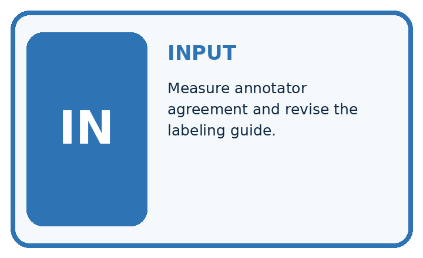
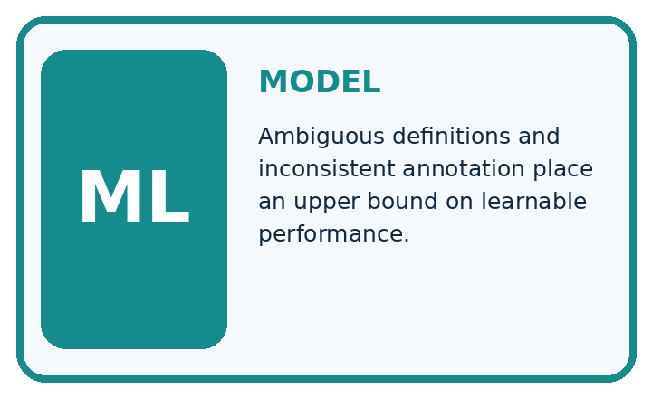
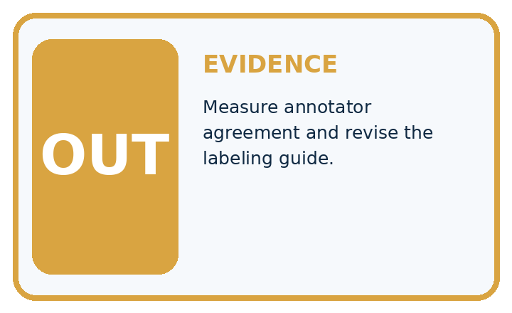
QUESTION Measure annotator agreement and revise the labeling guide.
MODEL IDEA Ambiguous definitions and inconsistent annotation place an upper bound on learnable performance.
PROOF NEEDED Use an unseen case, visible calculation, error analysis, and a stated limitation.
Draw a fresh data → model → prediction → evaluation trace:
A closer explanation
Two annotators used an earlier vague instruction, mark an obstructed lane, on four invented items. Their labels are shown in the code. A and D match; B and C differ. Compare the same item IDs, not merely the first row in two differently ordered files.
pairs = [("A", "blocked", "blocked"),
("B", "clear", "blocked"),
("C", "review", "clear"),
("D", "clear", "clear")]
agree = 0
for item_id, first, second in pairs:
if first == second:
agree = agree + 1
print(agree, len(pairs))The output is 2 4: two matching labels among four paired items, so observed exact agreement is 2/4 or 50 percent. Here review is included as a label value in the comparison: review versus clear is a disagreement. This simple count is not model accuracy and does not establish which labels are correct.
Follow a disagreement back to evidence
The code assumes one valid pair per unique item ID and allowed label strings. It does not validate IDs or spelling. Use a nonempty paired set before calculating a fraction; zero paired items gives no agreement estimate.
Connect the picture and the explanation
Point to the input, the deciding step and the result in this week’s visual. Explain the same step in ordinary words. A picture helps when you can say what each part represents.
Student lesson · 4 of 14
Compare the cases
EVALUATION DESIGN
Four Tests, Four Kinds of Evidence
A system is not understood until it survives more than one comfortable example.


NORMAL Expected data and expected behavior.
BOUNDARY Value close to a threshold, ambiguous label, or uncertain prediction.
MISSING Necessary field, label, source, or measurement is unavailable.
SHIFTED New lighting, species, device, subgroup, or time condition.
Which case most threatens today's claim, and why?
Change one thing in the pictured case
Change: Z receives a new fully visible image with no brown spots.
Prediction: Label the new observation healthy under the toy rule.
Reason: The missing visual evidence is now supplied; the earlier uncertain image was not proof of health.
Student lesson · 5 of 14
Words that unlock the idea
VOCABULARY
Words You Can Calculate and Defend
A definition matters when it lets you interpret a new dataset, model, or result.
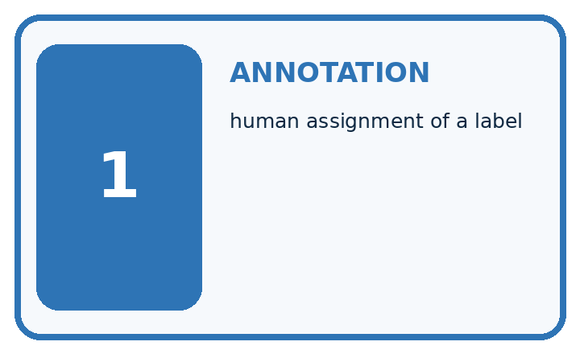
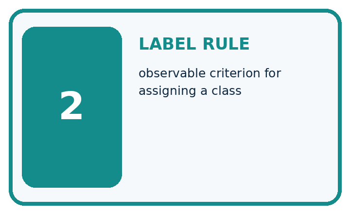
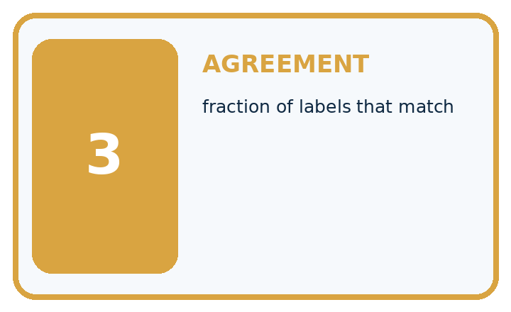
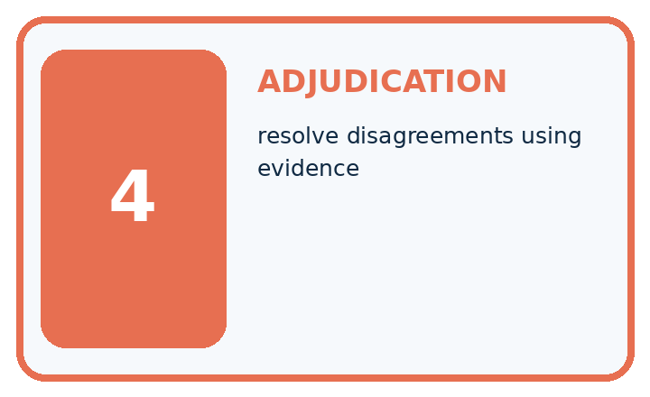
| Term | Precise meaning | My ML example |
|---|---|---|
| annotation | human assignment of a label | |
| label rule | observable criterion for assigning a class | |
| agreement | fraction of labels that match | |
| adjudication | resolve disagreements using evidence |
Repair the claim using a definition, calculation, or test record:
Words used in the closer explanation
| Word | Meaning |
|---|---|
| Label rule | A written definition for assigning an outcome to an example |
| Annotator | A person who assigns labels using a stated rule |
| Agreement | How often annotators assign the same label to the same items |
| Adjudication | Reviewing evidence and rules to resolve a disputed label or retain uncertainty |
Student lesson · 6 of 14
Follow a worked example
WORKED EVIDENCE
Reason Step by Step
Predict first. Then check each step. A correct answer without visible evidence cannot be audited.
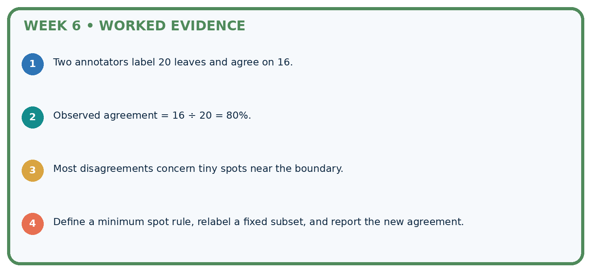
STEP 1 Two annotators label 20 leaves and agree on 16.
STEP 2 Observed agreement = 16 ÷ 20 = 80%.
STEP 3 Most disagreements concern tiny spots near the boundary.
STEP 4 Define a minimum spot rule, relabel a fixed subset, and report the new agreement.
Recalculate, retrace, or restate the evidence independently:
A closer explanation
For B, the full lane is visible and a wheel touches its boundary. One annotator treated touching as clear; the other treated it as blocked. Rule v1 explicitly includes touching, so the reviewed label is blocked. Preserve both original labels and record the item, rule version, evidence, decision and reviewer. Do not silently overwrite the originals.
For C, a curtain hides part of the lane. One annotator guessed clear; the other requested review. Rule v1 requires full visibility for clear. The justified status remains review until sufficient evidence is available. More votes cannot reveal the hidden area.
A decision log could say: B, original clear/blocked, wheel touches line, v1, blocked after review by the teacher. For C it could say: original review/clear, lane partly hidden, v1, unresolved review. Add the labeling method and rule version to the dataset card.
Learn from the worked case
Cover the result before checking it. Say what is given, choose the procedure, and follow one step at a time. Then uncover the result and explain your first mismatch. Ask why a step is allowed, not only what number it produces.
A pictorial worked case: Label Quality
Write a label rule that resolves the visible boundary case.
The facts we will use
Toy spotted-leaf rule: at least one fully visible brown spot means spotted; occluded leaves require review. X has one visible spot; Y has none; Z is half hidden.
All inputs and outcomes in this worked example are invented classroom data; no real model run is claimed.
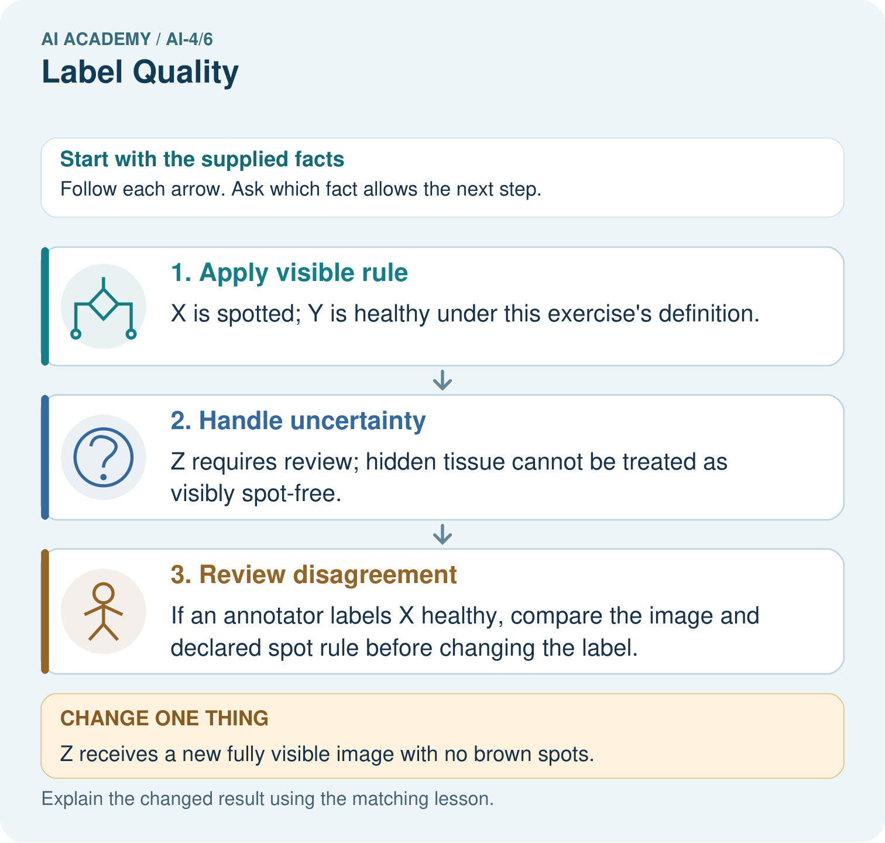
Read the picture one step at a time
Why this result follows
Read the picture in order. If an annotator labels X healthy, compare the image and declared spot rule before changing the label. The arrows show which recorded input or intermediate result each decision uses. Explain the deciding step aloud before checking the changed case; pointing to the final answer alone does not show how it follows.
What this example does not establish
Visible brown spots are a simplified classroom target, not a diagnosis of plant disease.
Student lesson · 7 of 14
Find and repair a mistake
ERROR DETECTIVE
Compare → Diagnose → Repair
Do not patch the answer. Find the earliest unsupported assumption, data problem, or experiment error.
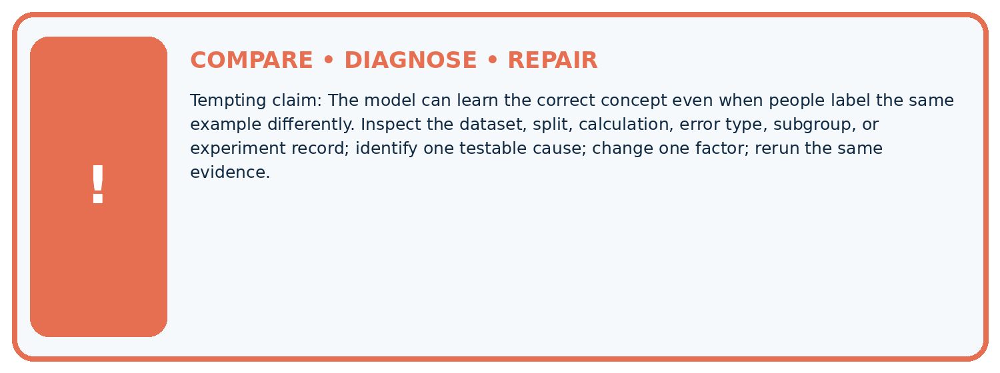
| Evidence record | Expected | Actual | Likely cause / next test |
|---|---|---|---|
| normal case | passes | ||
| boundary case | defined behavior | ||
| missing case | safe fallback | ||
| shifted case | measured limit |
Diagnose one cause and name the cleanest next experiment:
A closer explanation
Report the paired-item count, agreement count, handling of review and the rule version. For the original four-item comparison, say two of four pairs match, including review statuses. If you report a subset, name its selection rule and denominator. This tiny invented set says nothing about reliability on other scenes.
Keep practice for writing label rules separate from final model testing. Resolving labels needs a documented process; reviewing model predictions to choose convenient labels would undermine a fair evaluation. Next week you will separate related examples when designing data splits.
Student lesson · 8 of 14
Practise together
ML STUDIO
Specify Before You Run
A trustworthy result can be reproduced from the recorded data, code, settings, and evaluation rule.

Experiment record
QUESTION + intended use + success threshold
DATA version + grouped split + leakage check
CODE/preprocessing + features + model + settings + seed
METRICS + positive class + units + denominators
PREDICTIONS + errors + subgroup slices + limitations
HUMAN reviewer + release, revise, limit, or stop decision
Write the minimum record needed to reproduce today's result:
A closer explanation
A useful rule names the object of judgment, allowed labels, observable evidence, boundaries and an uncertainty route. Include a typical example and a boundary example. Pilot the rule independently on a few new items, compare labels, discuss causes, revise the wording and label new items again. Record which rule produced each set of labels.
Do not change the rule simply to improve a score or make a model look correct. A rule revision can change the target itself. If touching is changed from blocked to clear, document the changed task, review all affected examples consistently and keep versions separate. Consult task evidence when interpreting a disagreement; a majority vote alone cannot prove truth.
Practise with less help: Interpret agreement
Use workbook W2 for the connected example “Label definitions and disagreement”. First fill the input and rule boxes. Try the middle steps before asking for a hint. After a hint, try the next step yourself.
| Plan | Do | Check |
|---|---|---|
| What is given? Which rule or procedure applies? | Record each intermediate step. | Does the result follow? What remains unknown? |
Explain your trace to a partner. Your partner points to one step to check. Swap roles on the next case. Each person writes their own explanation.
Check your reasoning
Use the worked case for Label definitions and disagreement. Proposed explanation: “Agreement is accuracy”. Decide whether this explanation is supported. Point to the step or supplied fact that decides; explain your repair if needed.
Answer on your own before discussion. If you are unsure, say which step you need help with.
Explain the picture
Why should two annotators not vote away Z’s missing evidence? Point to the relevant step in the picture, then write the changed result and the rule or evidence that supports it.
This is supported practice. Keep the separately named independent case for an attempt before feedback.
Student lesson · 9 of 14
Run the investigation
EVIDENCE LAB
Predict → Run → Calculate → Interpret
Keep the test conditions fixed, record every result, and change only one planned factor.
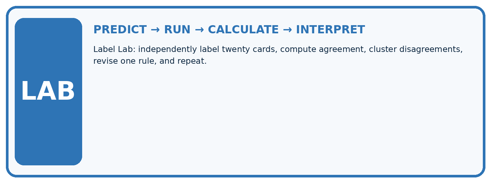
1. Write the hypothesis and expected evidence before running.
2. Label Lab: independently label twenty cards, compute agreement, cluster disagreements, revise one rule, and repeat.
3. Run one normal, one boundary, one missing, and one shifted case.
4. Calculate the metric from raw counts or row-level errors.
5. Interpret what changed, what did not, and what remains unsafe or unknown.
| Case | Prediction | Actual | Calculation / evidence | Meaning / next test |
|---|---|---|---|---|
| Normal | ||||
| Boundary | ||||
| Missing | ||||
| Shifted |
Plan → try → check
Before trying: what do I expect, and why? While trying: which step could first go wrong? Afterwards: what did I actually observe, and what should change? Keep “not run” if you only traced the procedure.
Student lesson · 10 of 14
Build your understanding
MASTERY
From Knowing the Word to Owning the Idea
Move upward only when you can produce evidence without copying the example.

DEFINE Use all four terms precisely: annotation, label rule, agreement, adjudication.
CALCULATE Reproduce the worked evidence with units and denominator.
TRACE Explain the data, code or decision path.
DIAGNOSE The model can learn the correct concept even when people label the same example differently.
TRANSFER Solve a fresh dataset or model case.
IMPROVE Change one cause and rerun fixed evidence.
DEFEND State intended use, metric, limitation, and human responsibility.
Student lesson · 11 of 14
Connect your project
CUMULATIVE PROJECT
Responsible Plant Classifier
Every week adds one reviewable artifact to the same evidence-based capstone.
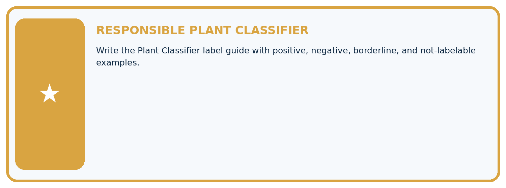
Which requirement or risk does this artifact address?
Which dataset, split, code, and metric version does it use?
What normal and shifted cases were tested?
What remains uncertain or weak?
What decision still belongs to a teacher or qualified human?
My evidence-linked project decision:
Evidence for your project
For your Responsible Plant Classifier, save the input, procedure, observed result and limitation of this check. Label this worked example as practice; use a different, previously unreviewed case when checking independent understanding.
Student lesson · 12 of 14
Show what you know
INDEPENDENT PROOF
Explain • Calculate • Transfer • Defend
Complete this with a fresh case after guided practice and compare it with the mastery criteria.
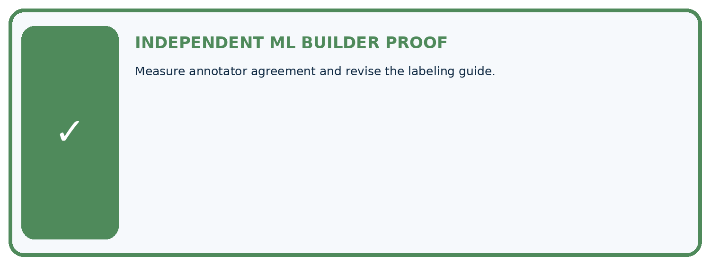
□ Define the task, feature/target roles, and intended-use boundary.
□ Show the calculation, code trace, or experiment record.
□ Test a normal case and one revealing boundary, missing, or shifted case.
□ Diagnose one failure without changing several factors at once.
□ Name a limitation, fairness concern, and the human-review action.
Independent evidence and defense:
My level: □ Not yet □ With one hint □ Independently □ I can teach and defend it
Student lesson · 13 of 14
Study a complete case
Week 6 Worked case
Use the supplied details to practise the weekly concept before attempting the independent question. This case extends the illustrated lesson.
The situation
Two annotators disagree on three of ten leaves, especially mild spotting.
The question
Improve label quality.
Worked explanation
Define spotting operationally, inspect disagreement, use appropriate adjudication and document ambiguity. Agreement is 7/10, but agreement is not proof of truth.
Explain it in your own words
Which detail supports the answer, and why does it matter?
Trace the supplied case visually
Agreement is useful evidence, not truth
| Evidence or stage | Value or result |
|---|---|
| Annotator agreement | 7/10 |
| Disagreement | 3/10 |
Two annotators disagree on three of ten leaves, especially mild spotting.
Improve label quality.
Define spotting operationally, inspect disagreement, use appropriate adjudication and document ambiguity. Agreement is 7/10, but agreement is not proof of truth.
Student lesson · 14 of 14
Try a new case independently
Independent case: Apply the process independently
New pairs are P blocked/blocked, Q clear/blocked, R review/review, S clear/clear, T blocked/clear. P has an object inside; Q touches the line; R is partly hidden; S has all objects outside a fully visible lane; T has an object inside. Count agreement including review. Apply v1 to all five. Then report agreement on the original pairs excluding any review status, with its denominator and limitation.
Attempt this case before feedback. Record any help. Earlier examples below are further practice; a case already practised with feedback cannot establish fresh transfer.
Week 6 Independent application
Close the worked explanation. Apply the idea to this different question without copying.
Two labelers assign different species to the same image. Should you silently pick the label that helps the model score? Describe a better process.
My answer, with a trace, calculation or supporting evidence
Create and test
Change one relevant detail. Predict the result before testing. Include a boundary or missing-information case when it helps reveal a limit.
My changed input and expected result
Connect to your project
Write the Plant Classifier label guide with positive, negative, borderline, and not-labelable examples.
The evidence I will keep
Your teacher has the independent answer and scoring criteria. Complete the matching workbook week to keep your practice evidence together.
Transfer practice from the original programme
Two labelers agree on 16 of 20 leaves. Both used a rule that mistakenly calls shadows 'spots'. Compute agreement and explain why it does not establish correct labels.
Use feedback to improve
Attempt the independent case before hints. Record whether you worked alone, used a hint or followed a model. After feedback, fix the first unsupported step and explain why it changed. A later check uses a changed case, not a copied answer.